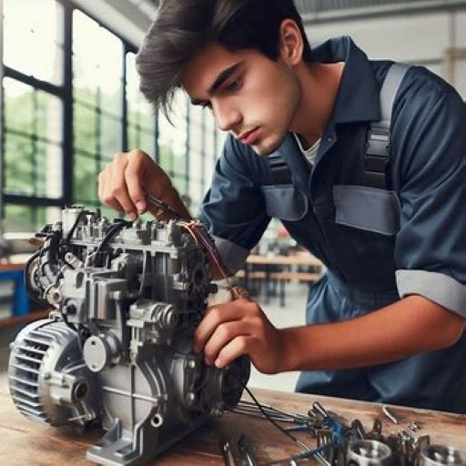

このホームページでは、高専という学校について紹介します。特に、私が所属している大阪公立大学工業高等専門学校（以降は大阪高専と省略）のエネルギー機械コース（以降はMコースと省略） について紹介します。
高専とは、日本独自の教育機関で、工業系の学校を指します。国立の高専は5年制の学校で、 中学卒業後の15歳から入学できます。実践的な知識を持つ技術者を養成することを目的としており、専門科目の授業や実験、実習を積極的に行います。 長期インターンや研修旅行、工場見学なども実施され、現場で即戦力として扱われるエンジニアとしての力を育てています。 高専卒業後は進学や就職が選択肢としてあり、企業や大学からも高く評価されています。また、専攻科という2年間の学科も存在し、 大学卒業と同じ学位を取得できることも特徴です。
大阪高専では2年生に進学する時に、コース分けをします。Mコースは大阪高専にある4つのコースの1つで、主に機械について学ぶことができるコースです。 輸送機械や発電所などの産業インフラの設計と運用に必要な技術を学び、水素エネルギーなどのクリーンエネルギーの創生と貯蔵に関する技術を修得します。 そして、エネルギー機械コースは自然災害の予測分析や対策に関する技術を学び、人々の暮らしと環境との共生を実現する技術者を育成しています。
Mコースでは、コース名の通り機械について学びます。ここでは、「実習」と「専門教科」について紹介します。
Mコースでは上のような実習を、週に一回、午前中の1～4時間目の授業でします。 実習の内容はコースによって、さまざまですがMコースでは自分自身の手で加工や組み立てをする実習が多いと感じています。
例えば、上の画像のような実習がありました。これは2年生の時に行った「エンジンの組み立てと分解」という実習です。 この実習では、実際のエンジンを二人一組で分解し、エンジンがどのようや部品で構成されていて、その部品がどのような仕組みで何を行っているのかを学びました。 そして、分解したものをもう一度、組み立てて、組み立てたエンジンが正常に動作するのかを確認しました。エンジンが正常に動作した時はとてもうれしく、達成感のある実習でした。 他にも、2年生では旋盤やボール盤、フライス盤などを使って金属を加工して、文鎮を作る実習もありました。 Mコースでは加工や組み立ての実習だけでなく、パソコンでCADを使ったり、NCプログラムを使ったりする実習もあります。 最近はパソコンなどの電子機器を使って、工作機械を制御して加工することが増えているため、そのような状況でも生かせる知識を実習で身に着けることができます。
大阪高専にある4つのコースそれぞれに専門教科があります。Mコースの専門教科は、上の箇条書きで示した教科です。 Mコースの専門教科は力学に関する教科が多いと感じています。そのため、力学に関する知識が要求されます。そして、機械や工学、力学のことだけではなく「シーケンス制御」 や「電気・電子回路」のような電気に関する専門教科もあります。
大阪高専では新しいカリキュラム（Rカリキュラム）が作られて、Mコースを含む4つのコースが作られました。最近作られたコースなので、まだ卒業生が出ていません。 そのため、就職先について詳しいことは分かりません。しかし、Rカリキュラムの一つ前のカリキュラム（Hカリキュラム）には機械システムコースや メカトロニクスコースといった、Mコースに似たコースがあります。そのコースの就職先について紹介します。

電気やガス、電車などの公共交通機関に就職する人が多いです。そのため、上の画像のように、大きな発電所や工場の中で多くの人と、ともに働くことが多いです。 詳しくはこちらをご覧ください。
また、高専の卒業後の進路は就職だけでなく、進学もあります。進学に興味がある方はこちらをご覧ください。
Mコースは主に機械について学ぶことのできるコースです。高専はモノづくりに関して学ぶことのできる特殊な学校です。 高専にはモノづくりに興味を持った人が集まっているので、モノづくりの興味のある人は高専を受験してみるのいかがでしょうか？ そして、モノづくりでも機械や乗り物などの大きなものを作りたい人はMコースにぜひ来てください！